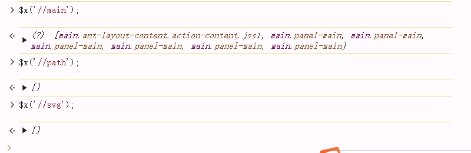

前言
Xpath 是一种用在 XML 文档中定位元素的语言，同样也支持 HTML 元素的解析。这篇文章主要是关于HTML部分的内容，从这个名字可以看出来，Xpath是关于路径的，Xpath是通过路径查找元素。
HTML中的Xpath
HTML是一种树形结构，HTML 是根节点，所有的其他元素节点都是从根节点发出的。其他的元素都是这棵树上的节点Node，每个节点还可能有属性和文本。
而路径就是指某个节点到另一个节点的路线。
我们一般的路径可以分为绝对路径和相对路径。Xpath中的绝对路径从 HTML 根节点开始算，相对路径从任意节点开始。
在浏览器中，我们可以直接复制需要节点的Xpath数据。
chrome浏览器中复制的相对路径会从举例最近的有id的元素开始找。
从上面这个路径我们可以看到，虽然能根据这个路径找到对应的目标元素，但是这里面有div[1]这种结构，即父节点下面的第一个div，这种路径并不是很可靠。所以，需要我们自己根据需要自定义Xpath数据。
绝对路径
绝对路径是从根节点/html开始往下，一层层的表示出来直到需要的节点为止，使用起来较为麻烦。这里就不多做介绍了，我们主要来看一下相对路径。
相对路径
Xpath 中更常用的方式是相对路径定位方法，以“//”开头。相对路径可以从任意节点开始，不过一般会选取一个可以唯一定位到的元素作为起始节点，可以增加查找的准确性。
定位语法
| 表达式 | 说明 | 举例 |
| / | 从根节点开始选取 | /html/div/span |
| // | 从任意节点开始选取 | //input |
| . | 选取当前节点 | |
| .. | 选取当前节点的父节点 | //input/.. 会选取 input 的父节点 |
| @ | 选取属性，或者根据属性选取 | //input[@data] 选取具备 data 属性的 input 元素 //@data 选取所有 data 属性 |
| * | 通配符，表示任意节点或任意属性 | |
常见的定位方法
元素属性定位
属性定位是通过 @ 符号指定需要使用的属性。
根据元素是否具备某个属性查找元素
根据属性是否等于某值查找元素

svg和path标签无法进行查找
注意，属性值必须要加引号，单双引号都可以。
层级属性结合定位
遇到某些元素无法精确定位的时候，可以查找其父级及其祖先节点，找到有确定的祖先节点后通过层级依次向下定位。
使用星号找不特定的元素；使用..找父级节点；使用//找某一类型的节点等等。
使用谓语定位
谓语是 Xpath 中用于描述元素位置。主要有数字下标、最后一个子元素last()、元素下标函数position()，还可以通过position()的比较大小查找某个范围的元素。
使用逻辑运算符
如果元素的某个属性无法精确定位到这个元素，我们还可以用逻辑运算符 and、or、| 进行运算定位。
注意：|是同时查找多个路径的。
使用文本定位
使用文本定位，是 Xpath 中的一大特色。可以通过 text()、string()方法获取元素节点的文本内容。
注意：text()和string()的区别在于text()只能获取当前节点的文本内容，string()可以获取当前节点内部所有元素节点的文本内容。
注意：使用string()查找的时候，在满足文本要求的前提下，查找的元素会把尽可能多的满足要求的节点都列出来，所以，如果需要查找具体的节点，要保证条件限制尽可能严格一点。
使用部分匹配函数
Xpath 中有提供了几个函数，用来进行部分匹配。
| 函数 | 说明 | 举例 |
| contains | 选取属性或者文本包含某些字符 | //div[contains(@id, ‘data’)] 选取 id 属性包含 data 的 div 元素，//div[contains(string(), ‘支付宝’)] 选取内部文本包含“支付宝”的 div 元素 |
| starts-with | 选取属性或者文本以某些字符开头 | //div[starts-with(@id, ‘data’)] 选取 id 属性以 data 开头的 div 元素，//div[starts-with(string(), ‘银联’)] 选取内部文本以“银联”开头的 div 元素 |
| ends-with | 选取属性或者文本以某些字符开头 | //div[ends-with(@id, ‘require’)] 选取 id 属性以 require 结尾的 div 元素，//div[ends-with(string(), ‘支付’)] 选取内部文本以“支付”结尾的 div 元素 |
注意
兼容性和替代方案
需要注意的是，ends-with函数是XPath 2.0的语法，而一些浏览器可能只支持XPath 1.0。如果你在使用XPath 1.0的环境中遇到问题，可以使用以下替代方案：
//input[substring(@id, string-length(@id) - string-length(‘123’) + 1) = ‘123’]
验证 Xpath
验证 xpath 有两种方法：
- 在开发者工具的 Elements 中按Ctrl + F，在搜索框中输入 Xpath
- 在开发者工具的 Console 中使用 $x()
Xpath用处
- 在网络爬虫中，XPath是一个非常强大的工具，可以帮助我们精确定位和提取需要的数据。
- 在Web自动化测试中，XPath用于定位页面元素，执行点击、输入等操作，常用于Selenium等自动化测试框架中。

Sun Jinkang
9+1=10
77
0
2